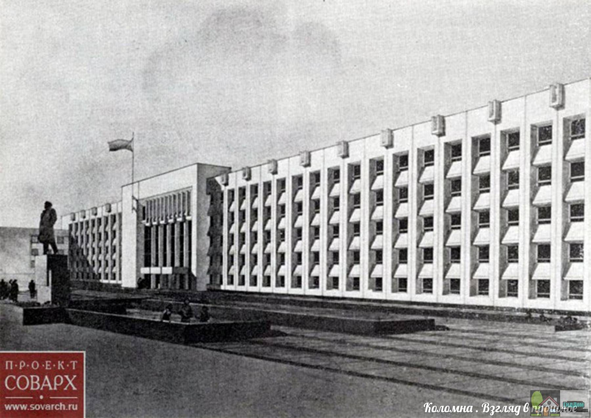
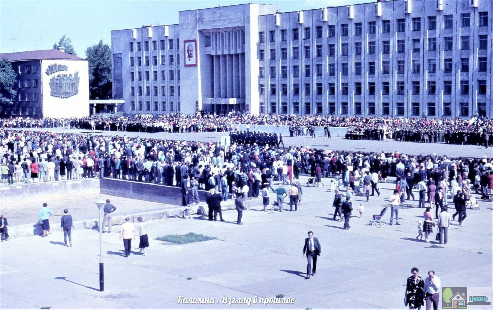

Администрация Городского округа Коломна
Здание городской администрации города Коломны, среди горожан также называемый «Белый дом», было построено в 70-е годы XX века во время застройки Советской площади. Совместно со зданиями Дома торговли и гостиницы «Коломна» образует единый архитектурный ансамбль.
Для размещения городских властей всегда выбирались интересные и значимые городские здания. Так дореволюционная городская управа размещался в двухэтажном особняке на улице Лажечникова.Молодая советская городская власть разместилась в так называемом доходном дома Фролова.
В 1970-е годы в рамках развития города было принято решение о комплексной застройке современной площади Советской. В рамках реализации данного проекта были возведены здания Дома Торговли, гостиницы Коломна, кинотеатра Горизонт и прочие. Здание городской администрации было торжественно открыто 28 августа 1977 года в день празднования 800-летия Коломны.
Коломенский Белый дом представляет собой пятиэтажное здание, обицованное белой плиткой, за что здание и получило свое народное название. Здание городской администрации является частью единого архитектурного ансамбля площади Советской, включающей здание гостиницы Коломны и Дома Торговли.

